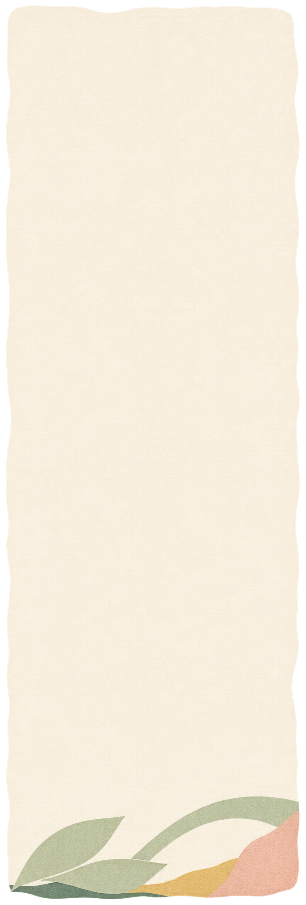

同じことで悩んだり、つい自分を責めたりしてしまうのは、あなたのせいではありません。
性格が弱いからでも、努力が足りないからでもありません。
人の顔色をうかがうことも、言いたいことを飲み込むことも、これまで自分を守るために必要だったのかもしれません。
でも、かつて必要だった方法が、今のあなたを苦しくさせていることもあります。
今は必要のなくなった考え方を、
「今まで守ってくれて、ありがとう」
そんな気持ちで、少しずつ手放していきませんか。すぐに変わらなくても大丈夫です。
これからは、人からどう思われるかと同じように、自分がどう生きたいかも大切にしてほしいと思います。
「私はこれを選んだ」と納得できる人生のために、今の自分を支える考え方を育てていきましょう。
その方法を古典から学び、日常のなかで練習を重ねます。
あなたが、もっと軽やかに、自分の人生を生きていけるように、私もご一緒します。